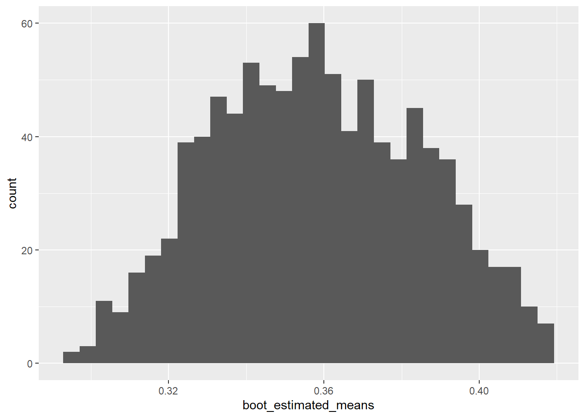
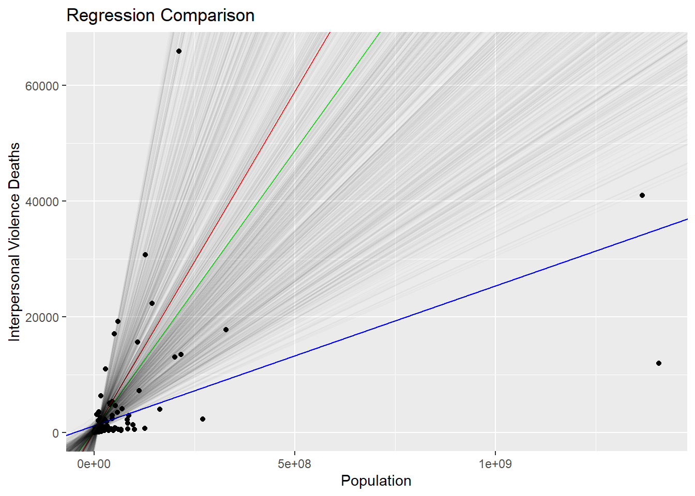
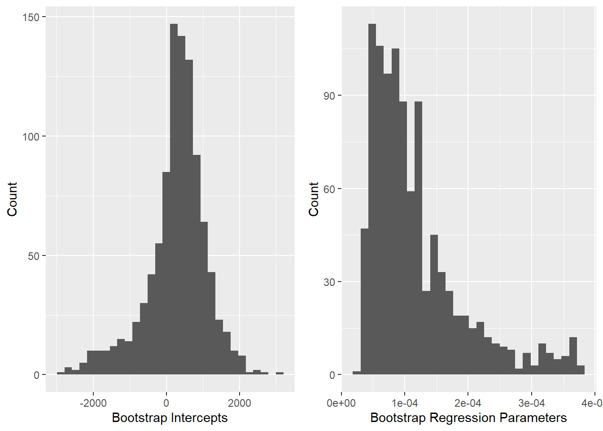

# Import the data
bootstrapping_data_cleaned = read.csv('bootstrapping_data_cleaned.csv',
stringsAsFactors = TRUE)View presentation here.
Introduction
Resampling is the process of creating new samples based on an observed sample to gather more information about either the sample or the population the sample came from. Resampling techniques like permutation tests, cross validation, and the jackknife have been prevalent in the statistics world for a while.
Resampling can come in handy when it’s either impossible or unfeasible to retrieve a sample from the entire population. For instance, if you wanted to learn more about all attendees of a concert it would be very difficult to survey every single person in attendance. While you might not be able to survey everyone at the concert, you most likely could survey a smaller subset, say 100 to 200. With resampling techniques you could verify the accuracy of the original sample, or make observations about the entire population of concert goers.
All of the resampling techniques listed either have assumptions required for them to make meaningful results, fail at specific estimations, or produce errors during the process. The Bootstrap method was introduced to overcome some of the pitfalls of the jackknife resampling method.
What is the Bootstrap Method
The Bootstrap Method was first introduced by Bradley Efron in Bootstrap Methods: Another Look at the Jackknife (B. Efron 1979). He described the Bootstrap as a more primitive method, whose applications are more wide and dependable than those of the jackknife. The Bootstrap was introduced as a way to estimate a sampling distribution based on the observed sample. The Bootstrap is also shown to estimate the variance here, which is an area the jackknife fails at, along with being shown to do well as estimated the error rates in certain problems, outperforming other non-parametric estimation methods.
At a very high-level, Bootstrapping is the process of taking a sample and using it to create a new sample with replacement. Doing so gives every observation an equal chance to show up in the new sample, and some might show up more than once while others might not show up due to replacement. Doing this multiple times can give an understanding about the population that the original sample came from.
While all Bootstrap methods follow the same formula, there are some slight differences between different version of the Bootstrap. For example, the Monte Carlo technique takes exact copies of the data from the original sample to place into the new sample (Hossain 2000) while the Bayesian Bootstrap adds weights to each observation before selecting the data for the new sample. These slight differences result in multiple different types of Bootstraps that can be used for different applications or to get around certain assumptions of another type of Bootstrap.
Assumptions and Shortcomings
As Bootstrapping gains popularity, it’s important to understand that there are still assumptions that must be met, and shortcomings that should be understood. The Importance of Discussing Assumptions when Teaching Bootstrapping (Totty, Molyneux, and Fuentes 2021) takes an interesting approach of looking at those who are learning about Bootstrapping, and assessing possible pain points. The largest assumption listed is that the distribution can be made approximately pivotal through shifting or studentization. Further in this paper, an interesting result came out that if assumptions are broken when performing the Bootstrap method, it performs no better or worse then other methods whose assumptions are also broken. Performing Bootstrapping with broken assumptions can also lead to decreased performance of the method.
One of the shortcomings of the Bootstrap method is that the results still rely on the original sample (Hossain 2000). So, if the original sample contains many outliers, then it most likely won’t produce an accurate representation of the population. Small sample sizes and data that does not follow a normal distribution has also been found to negatively impact the performance of Bootstrapping methods (Totty, Molyneux, and Fuentes 2021).
Applications
Bootstrapping has far reaching applications from finding a population mean to performing hypothesis testing. Initially, Efron introduced the Bootstrap method to estimate the sampling distribution, estimate the median, error rate estimation in discrimination analysis, Wilcoxon’s statistic, and regression models (B. Efron 1979). Another application from Efron was introduced in Nonparametric Estimates of Standard Error: The Jackknife, the Bootstrap, and Other Methods (Bradley Efron 1981). He introduces the concept of using the Bootstrap to estimate the standard error based on the data. While this is normally done using parametric modeling methods, here it is being done with non-parametric methods, like the Bootstrap. As time has progressed, and computers have become more powerful, the applications of Bootstrapping have increased.
One popular application is using Bootstrapping to create confidence intervals for certain statistics. Due to the nature of Bootstrapping, it creates results that make perfect sense to construct confidence intervals. Often, Bootstrapping implements confidence intervals around estimated parameter values (Puth, Neuhäuser, and Ruxton 2015). One example is using Bootstrapping to find the population mean of a specific feature based on the sample means. A few other similar applications are creating a confidence interval for the population mean and estimating the distribution of a sample mean (Hossain 2000).
Another popular application to Bootstrapping is in regression. In regression, the Bootstrap method can be used to perform validation on the model. In Bootstrapping with R to make generalized inference for regression model (Sillabutra et al. 2016) the authors used the Bootstrap method to resample thousands of times, fit a model to each new sample, and save the intercept and regression coefficient estimates. Confidence intervals can then be created to assess performance of a population regression model against the Bootstrap sample models. Another possible application of Bootstrapping in regression is using it to approximate the distribution of the Lasso estimator for all possible values of the unknown regression parameter vector (Chatterjee and Lahiri 2011). The residual bootstrap can also be used to consistently estimate the distribution and variance of the adaptive Lasso estimator.
The rise of statistical and mathematical programming languages and tools have greatly improved the state of Bootstrapping. Since Bootstrapping normally requires a large number of iterations to produce meaningful results, faster computers and tools have allowed statisticians to gain useful information. software packages have been created for SAS, Stata (MD et al. 2005), and R (Sillabutra et al. 2016) that allow common Bootstrapping functionality to be used readily and easily.
Methods
There are a variety of different Bootstrap methods for specific scenarios, populations, samples, and applications. Although, many of the Bootstrap methods follow a similar set of steps. These steps for the one-sample problem were outlined in Bootstrap Methods: Another Look at the Jackknife (B. Efron 1979)
- Construct the sample probability distribution \(\hat{F}\), putting mass \(1/n\) at each point \(x_1, x_2, x_3, . . . , x_n\).
- With \(\hat{F}\) fixed, draw a random sample of size \(n\) from \(\hat{F}\), say \(X_{i}^{*} = x_{i}^{*}\), \(X_{i}^{*} \sim _{ind}\hat{F}\) and call this the bootstrap sample.
- Approximate the sampling distribution of \(R(X, \hat{F}\) by the bootstrap distribution of \(R^{*} = R(X^{*}, \hat{F})\).
Or more simply, to perform the Bootstrap method as proposed, given a sample of size \(n\), a new sample of size \(n\) can be created by selecting from the original sample with replacement. Since the new sample is created with replacement, every element from the original sample has the same probability of ending up in the new sample. This can then by performed multiple times to estimate the sampling distribution based on the Bootstrap distribution.
As time went on, new methods for Bootstrapping were introduced to be applied to different applications or to further enhance the accuracy. Some of the more popular methods are listed below.
Types of Bootstrap
Monte Carlo Case resampling
In the Monte Carlo method, a new sample is created by randomly selecting values from the original sample using replacement to create a sample of the same size. Statistics can then be computed from this new sample. This process is then repeated many times to create an estimate of the population statistic. (B. Efron 1979)
Exact Case resampling
The exact version for Bootstrap case resampling is similar to the Monte Carlo method, except every possible enumeration of the initial sample is created. The downside to this method is since there are a total of \({2n - 1 \choose n} = \frac{(2n - 1)!}{n!(n - 1)!}\) possible samples, the process can be very intensive for large sample sizes. (Hossain 2000)
Smooth Bootstrap
In the Smooth Bootstrap, a small amount of random noise is added to every re-sampled observation. This noise is zero-centered and usually normally distributed. Doing this means that the re-sampled data is not limited to just the data in the original sample, but rather to data points in close proximity to the original samples. Figure 1 shows an example of the simple bootstrap density function and Figure 2 shows an example of the smoothed density function provided by (Dwornicka, Goroshko, and Pietraszek 2019).


While these are some of the more popular methods for Bootstrapping, since Bootstrapping simply refers to a test that uses random sampling with replacement, there are multiple other types of Bootstrap methods. Some others include the Bayesian Bootstrap method, which creates new samples through assigning weights to the original data (Rubin 1981), the Parametric Bootstrap, the Poisson Bootstrap, the Block Bootstrap, and resampling residuals.
Analysis and Results
Data and Visualization
Initial Data Sets
The dataset being used to explore Bootstrapping is the “Causes of Death - Our World in Data” dataset from Kaggle (Chavez 2022) which was expanded with the World Bank population dataset (2022). The “Causes of Death - Our World in Data” dataset contains thirty three causes of death broken down by continent, region, country, and territory and by the year of reporting. The World Bank population dataset contains population numbers for multiple years also broken down by continent, region, country, and territory. The populations from the population dataset were added into the causes of death dataset to allow for the calculation of the rate of death, or percentage of total population, for each cause of death.
To complete the original dataset, all rows that did not correspond to countries were removed. The number of executions and terrorism columns were also removed from the original causes of death dataset due to a lack of data for most countries.
As a final note, the Vatican and Liechtenstein are the only two countries missing from the final, cleaned, dataset because they were not included in the original causes of death dataset from Kaggle.
Data Cleaning
In order to fit the data into the experiments introduced later in the paper, the dataset will need to be further modified. A new column, Number_Of_Deaths, that includes the total number of reported deaths for a specific country and year by adding together the totals from all causes of deaths will be added. Next, only the columns needed for the experiments are extracted into a new dataset called boot_data. At this point, only data from the most recent reported year, 2019, is also extracted. The columns needed are the Entity, Population, Number_of_Deaths, Deaths_cardiovascularDiseases, and Deaths_InterpersonalViolence columns. Lastly, a new column is created that is the rate of all deaths caused by cardiovascular diseases.
# Create the total number of reported deaths column
bootstrapping_data_cleaned$Number_Of_Deaths <-
rowSums(bootstrapping_data_cleaned[,(5:35)])
# Filter down the data to just include 2019 and just the columns needed
boot_data =
bootstrapping_data_cleaned[bootstrapping_data_cleaned$Year == '2019',
c('Entity', 'Population', 'Number_Of_Deaths',
'Deaths_CardiovascularDiseases',
'Deaths_InterpersonalViolence')]
# Create the cardiovascular diseases rate column
boot_data$Deaths_CardiovascularDiseasesRate <-
boot_data$Deaths_CardiovascularDiseases / boot_data$Number_Of_DeathsThe dataset now contains the following columns:
| Name | Description | Type |
|---|---|---|
| Entity | Name of Country | Nominal |
| Population | Population of Country in 2019 | Discrete |
| Number_of_Deaths | Total Number of Deaths for Country in 2019 | Discrete |
| Deaths_CardiovascularDiseases | Total Number of Deaths for Country Caused by Cardiovascular Diseases in 2019 | Nominal |
| Deaths_InterpersonalViolence | Total Number of Deaths for Country Caused by Interpersonal Violence in 2019 | Discrete |
| Deaths_CardiovascularDiseasesRate | Rate of Deaths in Country Caused by Cardiovascular Diseases in 2019 | Continuous |
Descriptive Statistics
Now that the dataset is created, we can find population descriptive statistics to compare against the estimated population statistics from Bootstrapping. The data can also be visualized to check that the rate of deaths caused by cardiovascular diseases follows a normal distribution and that there appears to be a relationship between the number of deaths caused by interpersonal violence and the population of a country.
# Find cardiovascular disease death rate statistics
boot_means <- boot_data %>% summarize(mean_cardiovasculardiseasesrate =
mean(Deaths_CardiovascularDiseasesRate),
sd_cardiovasculardiseasesrate =
sd(Deaths_CardiovascularDiseasesRate))The average rate of deaths caused by cardiovascular diseases across the entire population is 0.3273, or 32.73%, with a standard deviation of 0.1309, or 13.09%.
# Create a histogram of the cardiovascular diseases death rate
cardioHistogram <- ggplot(boot_data,
aes(x = Deaths_CardiovascularDiseasesRate)) +
xlab('Cardiovascular Diseases Death Rate') +
ylab('Count') +
geom_histogram()
# Plot the interpersonal violence death rate against population
violenceHistogram <- ggplot(boot_data,
aes(x = Deaths_InterpersonalViolence,
y = Population)) +
scale_x_log10() +
scale_y_log10() +
xlab('Interpersonal Violence Deaths (log 10)') +
ylab('Population (log 10)') +
geom_point()
# Display plots side by side
grid.arrange(cardioHistogram, violenceHistogram, ncol = 2)
Based on the histogram for the cardiovascular diseases death rate, it appears that the death rate for cardiovascular diseases may follow a normal distribution. The plot for interpersonal violence shows that there may be a relationship between the number of deaths caused by interpersonal violence and the population of the country. In both cases the data appear to be good contenders for statistical modeling using the Bootstrap method.
Statistical Modeling
Two applications of the Bootstrap method, both using the Monte Carlo method (new samples are the exact size as the original sample) will be analyzed. The first application is estimating the population mean and standard deviation of the cardiovascular diseases death rate. The second application is testing the variability of a simple linear regression model that estimates the number of interpersonal violence deaths on the population of a country.
In both experiments a sample of the full population data will need to be taken to continue with the Bootstrap applications. A sample of the population was taken, without replacement, with size \(n = 20\) to use in the two applications.
# Create the initial sample
boot_initial_sample <- sample(1:nrow(boot_data), 20, replace = FALSE)Estimating Population Mean and Standard Deviation
To estimate the population mean and standard deviation using the Bootstrap method, 1,000 new samples were created, with replacement, using the initial sample created. A simple loop can be created to continuously create these new samples. For every new sample that is created, the mean and standard deviation can be calculated and saved to be analyzed.
# Create vectors to store new sample means and standard deviations
boot_estimated_means <- rep()
boot_estimated_sds <- rep()
# Create 1,000 new samples and save the means and standard deviations
for (x in 1:1000) {
boot_new_sample <- sample(boot_initial_sample, 20, replace = TRUE)
boot_estimated_means <- append(boot_estimated_means,
pull(
summarize(
boot_data[boot_new_sample,],
mean(Deaths_CardiovascularDiseasesRate))))
boot_estimated_sds <- append(boot_estimated_sds,
pull(
summarize(
boot_data[boot_new_sample,],
sd(Deaths_CardiovascularDiseasesRate))))
}# Display some estimated means
head(boot_estimated_means)[1] 0.4609054 0.4027245 0.3656332 0.3721877 0.3540715 0.3567189# Display some estimated standard deviations
head(boot_estimated_sds)[1] 0.1363290 0.1312991 0.1501239 0.1546183 0.1583402 0.1241831In order to create a 95% confidence interval for the population mean and standard deviation, the top and bottom 2.5% of saved means and standard deviations can be trimmed.
# Sort the estimated means from smallest to largest
boot_estimated_means <- sort(boot_estimated_means)
# Sort the estimated standard deviations from smallest to largest
boot_estimated_sds <- sort(boot_estimated_sds)
# Trim the top and bottom 2.5%
start = length(boot_estimated_means) * 0.025
end = length(boot_estimated_means) * 0.975
boot_estimated_means <- boot_estimated_means[start:end]
boot_estimated_sds <- boot_estimated_sds[start:end]Now, by retrieving the first and last element in both the mean and standard deviation vectors, the 95% estimated population intervals can be constructed. The 95% confidence interval for the population mean is [0.3003, 0.433] or [30.03%, 43.3%]. The 95% confidence interval for the population standard deviation is [0.1084, 0.1818] or [10.84%, 18.18%].
To evaluate the accuracy of the estimated population mean and standard deviation for the rate of deaths caused by cardiovascular diseases, the population mean and standard deviation found from the full population can be compared to the estimated confidence intervals. The true population statistics should fall within the confidence interval range. In this case:
# Display a histogram of the estimated means from the Bootstrap samples
ggplot() +
geom_histogram(aes(boot_estimated_means))
Visualizing the estimated means shows that they follow a normal distribution. This matches the full population data for the rate of deaths caused by cardiovascular diseases, which also follows a normal distribution.
Finding Variablility of Regression Model
The next experiment is finding the variability for a simple linear regression model. For this experiment a model will be fit that estimates the number of deaths caused by interpersonal violence by the population of a country. Similar to the first experiment, 1,000 new samples will be created and analyzed, except instead of retrieving the mean and standard deviation, a linear regression model will be fit based on the new sample and the intercept and regression parameter will be extracted and saved.
# Create vectors to store new intercepts and regression parameters
boot_estimated_intercepts <- rep()
boot_estimated_regressionparameters <- rep()
# Create 1,000 new samples and save the intercepts and parameters
for (x in 1:1000) {
boot_new_reg_sample <- sample(boot_initial_sample, 20, replace = TRUE)
boot_new_lm <- lm(Deaths_InterpersonalViolence ~ Population,
boot_data[boot_new_reg_sample,])
boot_estimated_intercepts <- append(boot_estimated_intercepts,
boot_new_lm$coefficients[1])
boot_estimated_regressionparameters <-
append(boot_estimated_regressionparameters,
boot_new_lm$coefficients[2])
}Once all models have been created, and the intercept and regression parameter saved, a model can be fit based on the full population and the initial sample so the Bootstrap model can be compared against the other two. The intercept and regression parameter for the Bootstrap model can find found by simply taking the average of the estimated intercepts and estimated regression parameter vectors.
# Create population model
pop_lm <- lm(Deaths_InterpersonalViolence ~ Population, boot_data)
# Create initial sample model
sample_lm <- lm(Deaths_InterpersonalViolence ~ Population,
boot_data[boot_initial_sample,])
# Find Bootstrapping average values
boot_lm_intercept <- mean(boot_estimated_intercepts)
boot_lm_x1 <- mean(boot_estimated_regressionparameters)| Population | Sample | Bootstrap | |
|---|---|---|---|
| (Intercept) | 1183.7272946 | -178.6216841 | -699.2135373 |
| x | 2.4147731^{-5} | 1.2629038^{-4} | 1.4353195^{-4} |
Based on the table above, it should be clear that the Bootstrap model more closely fits the sample model than the population model. Since the method produces different results every time it is ran, it is hard to speak to the exact numbers, but the sample and Bootstrap models are usually relatively close to each other, while the population model might not be close. This tells us that the full population model has high variability, or is sensitive to outliers or other influential data points. This outcome can also be visualized by viewing a plot of the original data with the population, sample, and Bootstrap models displayed. To visualize what the Bootstrap method is doing, all 1,000 iterations of models are also displayed.
# Plot the data, population model, sample model, and final Bootstrap model
# (average of all models)
final_plot <- ggplot(aes(x = Population, y = Deaths_InterpersonalViolence),
data = boot_data) +
geom_point() +
geom_abline(intercept = coef(pop_lm)[1],
slope = coef(pop_lm)[2],
color= 'blue') +
geom_abline(intercept = coef(sample_lm)[1],
slope = coef(sample_lm)[2],
color = 'green') +
geom_abline(intercept = mean(boot_estimated_intercepts),
slope = mean(boot_estimated_regressionparameters),
color = 'red') +
xlab('Population') +
ylab('Interpersonal Violence Deaths') +
ggtitle('Regression Comparison') +
labs(color = "Model")
# Add all Bootstrap models
for (x in 1:length(boot_estimated_intercepts)) {
final_plot <- final_plot +
geom_abline(intercept = boot_estimated_intercepts[x],
slope = boot_estimated_regressionparameters[x],
alpha = 0.025)
}
# Display final plot
final_plot
A comparison of the regression lines further solidify the results shown in the table. The sample model (green) and Bootstrap model (red) usually fall closely together on the line. Since the Bootstrap models are created using the same set of data as the initial sample this is expected. With this specific data set, how close the population model (blue) falls to the other two is highly variable. Since the results are different every time the models are created it’s possible that the Bootstrap model could fit the true population almost identically. More interesting, to visualize the variability, all Bootstrap models created are graphed (black). This shows the extreme values that can occur with this dataset.
# Create a histogram of the intercepts found from the Bootstrap method
interceptHistogram <- ggplot() +
aes(boot_estimated_intercepts) +
geom_histogram() +
ylab("Count") +
xlab("Bootstrap Intercepts")
# Create a histogram of the regression parameter found from the Bootstrap
# method
parameterHistogram <- ggplot() +
aes(boot_estimated_regressionparameters) +
geom_histogram() +
ylab("Count") +
xlab("Bootstrap Regression Parameters")
# Display plots side by side
grid.arrange(interceptHistogram, parameterHistogram, ncol = 2)
Again, similar to the means and standard deviations found in the first experiment, the intercepts appear to follow a normal distribution. The regression parameters usually do not appear to follow a normal distribution.
Conclusion
In the first experiment, the population mean and standard deviation were estimated using the Bootstrap method. After 1,000 new samples were created and the means and standard deviations from every sample saved, they were used to create a 95% confidence interval for the population mean and standard deviations. Using those confidence intervals, the true population values could be compared. It was found that the confidence interval for both the mean and standard deviation fell within the confidence intervals. Lastly, we could visualize that the estimated means followed a normal distribution.
In the second experiment the simple linear regression model to estimate the number of deaths caused by interpersonal violence on the country population was analyzed for variability in the model. Again, using 1,000 new samples, a model was fit for every sample created and the intercepts and regression parameters were saved. The average of all 1,000 intercepts and regression parameters were found to create the Bootstrap model. This model was then compared against the model created using the full population data and the model created using the initial sample data. It was found that the Bootstrap model usually follows the sample model more closely than the full population model. A graph was presented to show the difference between the three models, along with displaying all models created as part of the Bootstrap method.
These two experiments scratch the surface of demonstrate the usefulness of the Bootstrap method. The population mean, standard deviation, and distribution of the rate of death caused by cardiovascular diseases were able to be successfully estimated. The model of deaths caused by interpersonal violence on population was able to be analyzed to show it has high variability.
References
Chatterjee, A., and S. N. Lahiri. 2011. “Bootstrapping Lasso Estimators.” Journal of the American Statistical Association 106 (494): 608–25. http://www.jstor.org/stable/41416396.
Chavez, Ivan. 2022. https://www.kaggle.com/datasets/ivanchvez/causes-of-death-our-world-in-data.
Dwornicka, Renata, Andrii Goroshko, and Jacek Pietraszek. 2019. “The Smoothed Bootstrap Fine-Tuning.” System Safety: Human - Technical Facility - Environment 1 (1): 716–23. https://doi.org/doi:10.2478/czoto-2019-0091.
Efron, B. 1979. “Bootstrap Methods: Another Look at the Jackknife.” The Annals of Statistics 7 (1): 1–26. http://www.jstor.org/stable/2958830.
Efron, Bradley. 1981. “Nonparametric Estimates of Standard Error: The Jackknife, the Bootstrap and Other Methods.” Biometrika 68 (3): 589–99. http://www.jstor.org/stable/2335441.
Hossain, Mohammad. 2000. “Bootstrapping – an Introduction and Its Applications in Statistics.” Bangladesh Journal of Scientific Research 18 (January): 75–88.
MD, MS, PhD MD, Jason Haukoos, and Roger Lewis. 2005. “Advanced Statistics: Bootstrapping Confidence Intervals for Statistics with ‘Difficult’ Distributions.” Academic Emergency Medicine 12 (April): 360–65. https://doi.org/10.1197/j.aem.2004.11.018.
Puth, Marie-Therese, Markus Neuhäuser, and Graeme D. Ruxton. 2015. “On the Variety of Methods for Calculating Confidence Intervals by Bootstrapping.” Journal of Animal Ecology 84 (4): 892–97. https://doi.org/https://doi.org/10.1111/1365-2656.12382.
Rubin, Donald B. 1981. “The Bayesian Bootstrap.” The Annals of Statistics 9 (1): 130–34. http://www.jstor.org/stable/2240875.
Sillabutra, Jutatip, Prasong Kitidamrongsuk, Chukiat Viwatwongkasem, Chareena Ujeh, Siam Sae-tang, and Khanokporn Donjdee. 2016. “Bootstrapping with r to Make Generalized Inference for Regression Model.” Procedia Computer Science 86: 228–31. https://doi.org/https://doi.org/10.1016/j.procs.2016.05.103.
Totty, Njesa, James Molyneux, and Claudio Fuentes. 2021. “The Importance of Discussing Assumptions When Teaching Bootstrapping.” arXiv. https://doi.org/10.48550/ARXIV.2112.07737.